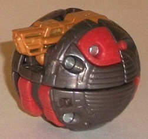
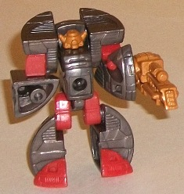
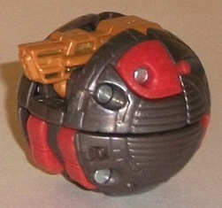
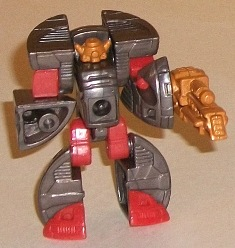
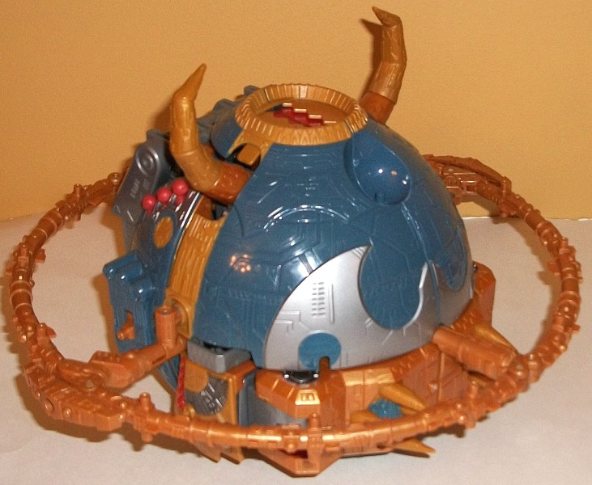
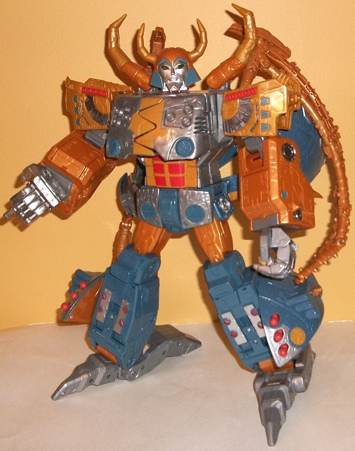

Kranix
Kranix
 
Allegiance : Minicon
Size : Mini-Con
Difficulty of Transformation : Very Easy
Color Scheme : Dark gunmetal gray, light pale red, and pumpkin orange
Individual Rating : 6.4
Unicron
w/ Kranix (Generations) [Amazon.com Exclusive]
Set Price : $60 (U.S.)
(NOTE: Because this set is a repaint, this
is not a full-blown review. This mainly covers any changes made to the
set and the color scheme, and merely compares it to Armada Unicron w/ Dead
End. For a review on the mold itself, read the review of Armada Unicron
w/ Dead End
here
.)
Kranix


Allegiance
: Minicon
Size
: Mini-Con
Difficulty of Transformation
: Very
Easy
Color Scheme
: Dark gunmetal gray,
light pale red, and pumpkin orange
Individual Rating
: 6.4
Kranix here is named
after the character in the G1 animated movie that was the sole survivor
of Unicron's initial attack at the beginning; other than the
general
color scheme, though, this toy bares no relation to him in terms of looks.
The gunmetal gray plastic used for most of Kranix is a pretty nice shade
of the color, being all swirly and the like. The light red less so, though
at least it's not used as much. It-- along with the pumpkin orange used
for Kranix's head and gun-- contrast quite well with the gunmetal gray,
but the light red just isn't that attractive of a shade. Overall it's not
the most cohesive color scheme, but it works considering Kranix is more
or less just the "left over colors" of whatever Unicron's mold sprue happens
to deem suitable for the larger, more important figure.
No mold changes have
been made to Kranix.
 Unicron
Unicron


Allegiance:
Decepticon (according
to the box, at least)
Size
: Supreme
Difficulty of Transformation
: Very
Hard
Color Scheme
: Pumpkin orange, pale
dark navy blue, light silvery milky gray, and some silver, light pale red,
clear plastic, dark metallic gunmetal gray
Individual Rating
: 9.7
Unicron's Armada deco
job was already fairly accurate to the G1 animated movie and could do for
it in a pinch, but this remold makes it about as spot-on to the original
movie as it can be without a completely new toy. Pretty much all of the
colors and major paint apps (if they make sense) are in the right places
for those who want something a lot closer to G1 Unicron. Even ignoring
that, though, it's a pretty good color scheme. The yellow on the Armada
version has been replaced with a nice Halloweeny pumpkin orange, and it
contrasts quite well with the dark blue (though I wish the blue were a
tad less dull and muted, myself). The light gray works as a decent neutral
color, as the swirls and slight "shiny" tint of the plastic make it look
less dull than the "standard" light milky gray used on many TFs nowadays.
Generations Unicron also has quite a few paint apps, pretty much everywhere
they're appropriate-- there's some nice large swaths of silver on his legs,
face, and planet mode pieces, and some metallic gunmetal gray on his arms
(that fits in well with the pumpkin orange). There's also some dark blue
paint on the orange parts and some orange paint on the dark blue parts,
to keep any one big area from looking too one-tone. In addition, there's
a fair amount of light red as a accent color on the chest, shoulders, and
lower legs, but just like on Kranix, it's not that attractive of a shade
of that color. It needs to be less pale. Unicron's right hand has been
kept transparent, to make use of his electronic gimmick (of which both
still work).
Generations Unicron
has one mold change-- the head has been redone to be spot-on accurate to
his G1 animated movie appearance. It's a VERY well-done piece of work,
looking like it came straight from the movie screen. My only complaint
about it is that the eyes still light up red, when if you're going by the
G1 head, they should be green.
Overall, the Generations Unicron & Kranix set is an easy recommendation, seeing as how (given the inflation rate) he's cheaper in actual value than the initial two renditions of the figure. I think he tops the Armada deco job-- mostly due to the improved head sculpt and the way the orange and dull blue play off each other-- but I think as a color scheme he comes up short to the Energon paint job . However, for those who love the G1 animated movie, the accuracy of the new colors to that nostalgic heyday era of the original G1 line may overshadow that. Kranix is largely forgettable aside from the throwback name, but you're not buying the set for him. Highly recommended, particularly if you don't have any previous version of the mold.
Reviews by Beastbot